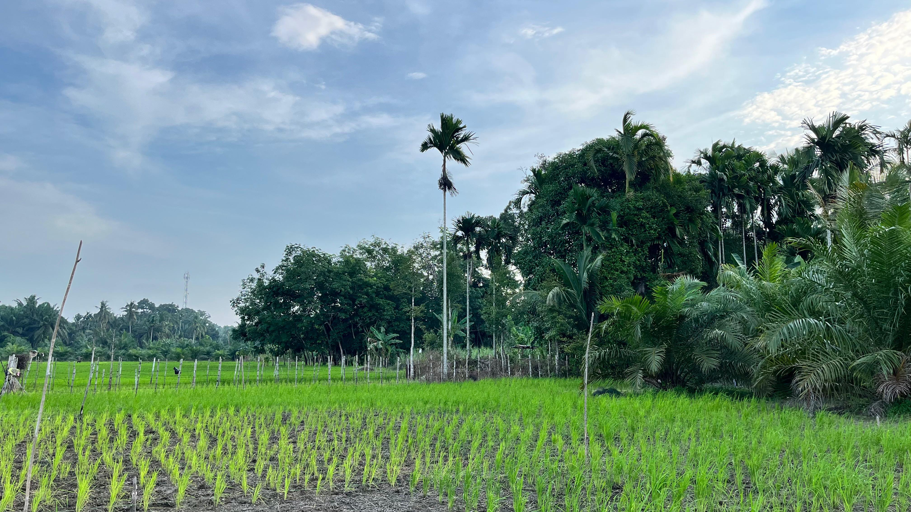

Selamat Datang di Portal Resmi Desa Naga Beralih
Assalamu'alaikum Warahmatullahi Wabarakatuh.
Website ini hadir sebagai media informasi mengenai Desa Naga Beralih. Melalui portal ini, kami berharap
masyarakat dan seluruh
pengunjung dapat mengenal Desa Naga Beralih dengan lebih dekat, mulai dari kondisi wilayah,
pemerintahan, potensi desa, hingga berbagai informasi yang berkaitan dengan desa.
Kami berharap website ini dapat menjadi sarana untuk memperkenalkan Desa Naga Beralih kepada
masyarakat luas, mendukung keterbukaan informasi publik, serta memberikan gambaran yang jelas mengenai
identitas dan perkembangan desa.
Terima kasih atas kunjungan Anda.
Pemerintah Desa Naga Beralih
Sekilas Tentang
Desa Kami

Desa Naga Beralih merupakan salah satu desa yang berada di Kecamatan Kampar Utara, Kabupaten Kampar, Provinsi Riau. Desa ini merupakan hasil pemekaran dari Desa Kampung Panjang dan secara resmi dibentuk berdasarkan Peraturan Bupati Kampar Nomor 22 Tahun 2007 serta diresmikan pada tanggal 28 Maret 2008.
SelengkapnyaStatistik Singkat
Luas Wilayah
2516 Ha
Jumlah Penduduk
2700 Jiwa

Jumlah Dusun
4 Dusun
Potensi Utama
Pertanian & Perkebunan